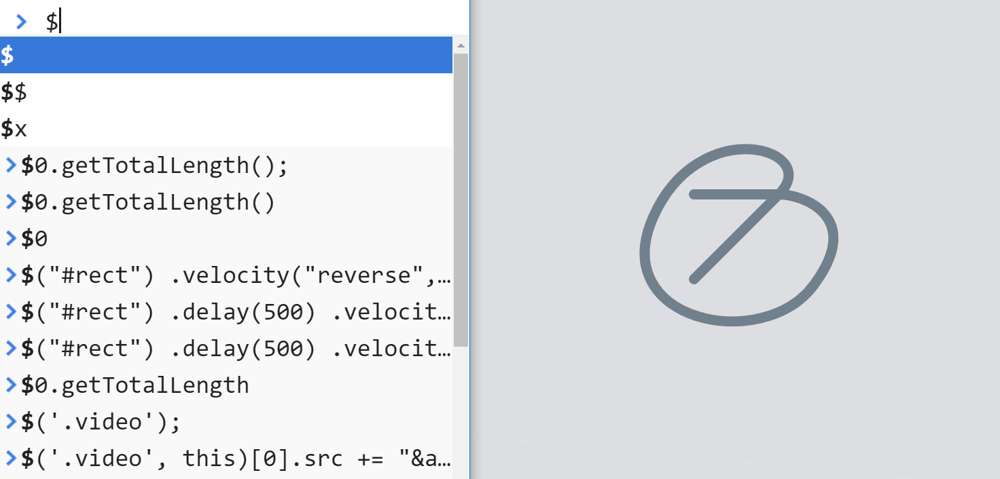

Fun (and useful)
SVG Animation With CSS
Web Directions Respond 2017
by Brett Snaidero
@brettsnaidero : Twitter | @brettsnaidero : Codepen
Interactive Designer at Internetrix
Primarily work as a web designer — graphic design and front end
Design background
Quite fond of HTML & CSS
What we'll cover
- What is SVG?
- Inline SVG
- SVG elements and attributes
- Styling SVG with CSS
- Stroke/Line animation
- Some fun examples
SVG: Scalable Vector Graphics
- Graphics file format — .svg
- Resolution independent
- Created with programs like Illustrator and Sketch
- May contain vector graphic shapes, bitmap (raster) images and text
<svg viewbox="0 0 200 100">
<!-- Rectangle -->
<rect x="75" y="10" width="60" height="45" fill="orange" />
<!-- Circle -->
<circle cx="30" cy="55" r="30" fill="blue" />
<!-- Text -->
<text x="100" y="85" font-size="20" fill="white">
SVG Text
</text>
</svg>
SVG and HTML: Long lost siblings
SVG is made up of tags, just like HTML, which define the 'structure' of the document.
HTML Tags
<body>
<div>
<header>
<footer>
<h1>
<p>
<section>
<article>
SVG Tags
<circle />
<ellipse />
<line />
<polygon />
<polyline />
<rect />
<path />
<text />
Embedding SVG 'inline' in HTML
We can put the SVG markup directly into our website as an HTML element, and it will render.
<body>
<!-- HTML -->
<div>Your SVG can sit in your HTML!</div>
<!-- SVG -->
<svg viewbox="0 0 200 100" width="200" height="100">
<!-- Rectangle -->
<rect x="75" y="10" width="60" height="45" fill="orange" />
<!-- Circle -->
<circle cx="30" cy="55" r="30" fill="blue" />
<!-- Text -->
<text x="100" y="85" font-size="20" fill="white">SVG Text</text>
</svg>
</body>
The viewBox attribute defines a grid
<svg viewBox="0 0 10 10">
<!-- Elements would love to go here -->
</svg>
And then we can draw elements according to that grid
<svg viewBox="0 0 10 10">
<line x1="2" y1="5" x2="8" y2="5" />
<polyline points="5,2 8,5 5,8" />
</svg>
We can write our SVG, or we could just use a program to generate our SVG
SVG Optimisation Tools
Minimise size and improve readability
- Remove unneccessary tags
- Simplify paths
- Clean up attributes
We can apply CSS to SVG elements
<svg viewBox="0 0 200 200">
<!-- Star -->
<path class="star" d="..."/>
</svg>
svg .star {
fill: rgba(0,0,0,0.1);
stroke: #FFF;
stroke-width: 5px;
stroke-linecap: round;
}
CSS Animations work on SVG elements too!
svg .star {
animation: rotate 10s infinite linear;
}
@keyframes rotate {
0% { transform: rotate(0deg); }
100% { transform: rotate(360deg); }
}
SVG Paths + Stroke + CSS Animation =
Line Animation
Polygon Console Review Illustrations
stroke |
The color of the stroke. |
blue
|
stroke-width |
The width of the stroke. |
3px
|
stroke-dasharray |
Define a series of strokes (eg. dashes, dots). |
10px 20px
|
stroke-dashoffset |
Offset the beginning of the stroke. |
20px
|
stroke-linecap |
The shape used to cap the stroke/s. |
round
|
stroke-linejoin |
The shape used to join two lines. |
bevel
|
The stroke-dasharray attribute controls the pattern of dashes and gaps used to stroke paths.
stroke-dasharray: 10px;
stroke-dasharray: 10px 20px;
stroke-dasharray: 10px 20px 5px;
Animating lines with
stroke-dasharray + stroke-dashoffset
We use stroke-dasharray to define a 'dash'
which is the length of the entire path.
Then, we use stroke-dashoffset to move our dash
until it's no longer visible.

Need help finding the line length?
You can find the exact length of an SVG path using a little bit of Javascript - with the getTotalLength method
let path = document.querySelector('.star');
let length = path.getTotalLength();
Then, we can transition the stroke-dashoffset so the line is drawn back onto the path.
.star {
stroke-dasharray: 390px;
animation: draw 5s linear infinite;
}
/* Line length = 390px */
@keyframes draw {
0% {
stroke-dashoffset: 390px;
}
100% {
stroke-dashoffset: 0px;
}
}
Line animation is a useful technique for animated graphics
But SVG line animation can be a very useful technique for easily adding style to common website elements
Tutorial Time #1
Making an Animated Hamburger Menu Icon with SVG + CSS
We start by creating the 'rails' on which our lines will travel.
We then define the stroke-dasharray and stroke-dashoffset to create the hamburger icon.
.top, .bottom {
stroke-dasharray: 50px 600px;
stroke-dashoffset: 0px;
}
.middle {
stroke-dasharray: 50px 60px;
stroke-dashoffset: 0px;
}
Then, we work out the 'active' state, where the lines form the cross.
.active .top,
.active .bottom {
stroke-dasharray: 70.71px 600px;
stroke-dashoffset: -392px;
}
.active .middle {
stroke-dashoffset: 51px;
}
/* Hamburger */
.line.top {
transition: 0.5s stroke-dasharray ease 0s, 0.5s stroke-dashoffset ease 0s; }
.line.bottom {
transition: 0.5s stroke-dasharray ease 0.25s, 0.5s stroke-dashoffset ease 0.25s; }
.line.middle {
transition: 0.25s stroke-dasharray ease 0.25s, 0.25s stroke-dashoffset ease 0.25s; }
.active .line.middle {
transition: 0.25s stroke-dasharray ease 0s, 0.25s stroke-dashoffset ease 0s; }
Other Styles
Codrops Hamburger Icon Tutorial
Tutorial Time #2
Animated Checkbox/Radio Buttons
Our Shapes
Our HTML
<input name="tick" type="checkbox">
<label for="tick">
Legit hand-drawn checkbox tick
<!-- SVG for tick -->
<svg viewBox="0 0 100 100">
<path d="M22.3,61.3c5.7,4.1,13.2,11.8,16.7,18
C53,60.5,66,41,77.7,20.8"/>
</svg>
</label>
Visually hide the input
/* Visually Hide input */
input[type="checkbox"] {
opacity: 0;
-webkit-appearance: none;
display: inline-block;
vertical-align: middle;
z-index: 100;
width: 50px;
height: 50px;
top: 50%;
left: 0;
margin-top: -25px;
position: absolute;
}
Create our fake check box
/* Fake Check 'box' */
label:before {
content: '';
border: 4px solid #5296ab;
transition: opacity 0.3s;
width: 50px;
height: 50px;
top: 50%;
left: 0;
margin-top: -25px;
position: absolute;
cursor: pointer;
}
/* Tick */
input[type="checkbox"] + label svg {
stroke: orange;
stroke-width: 1px;
stroke-linecap: round;
stroke-dasharray: 100px 200px;
stroke-dashoffset: 100px;
transition: stroke-dashoffset 0.2s ease-in-out 0s;
}
/* Checked - stroke offset is removed to 'draw' the tick */
input[type="checkbox"]:checked + label svg {
stroke-dashoffset: 0px;
}
SVG + HTML + CSS = 💖
Using SVG as an extension of HTML allows you
to accomplish more in the browser.
- Easy to learn the basics
- Use existing knowledge of graphics editors
- Use existing knowledge of CSS
Know your Javascript?
There are a number of JS animation libraries which give you control over SVG:
Advantages of using a JS library
- Browser consistency
- Simplify chaining animations
- Programmatic animation
- Tweening and shape animation
- Removes manual 'hard-coding' of values
Example: JS animation with Velocity
$("#rect")
.delay(500)
.velocity({ x: "+=200", y: "25%" })
.velocity({ fillGreen: 255, strokeWidth: 2 })
.velocity({ height: 50, width: 50 })
.velocity({ rotateZ: 90, scaleX: 0.5 })
.velocity("reverse", { delay: 250 });
In Conclusion
If you know HTML & CSS, SVG is easy to learn
Animating SVG is fun!
SVG gives your HTML/CSS superpowers